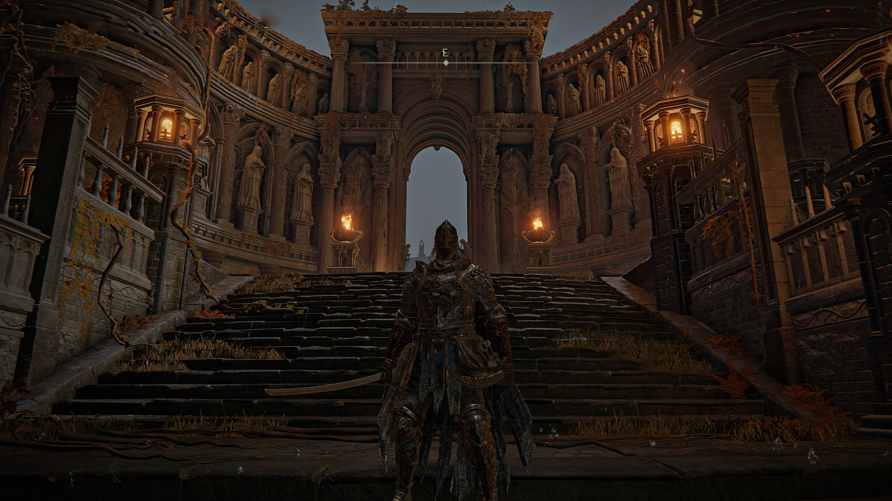

STARSCOURAGE RADHAN
" The Red Lion General wielded gravitational powers which he learned in Sellia during his younger days. All so he would never have to abandon his beloved but scrawny steed.
Swept by the red, howling winds of the desolate Caelid wilds, Starscourge Radahn stands as a tragic titan, endlessly roaming a battlefield carved by his own legend. Once revered as the mightiest demigod of the Shattering and a master of gravitational magic who held the very stars in place, he was brought low not by defeat, but by the horrific taint of Malenia’s Scarlet Rot. Reduced to a mindless, feral shadow of his former glory, he wanders the red wastes atop his beloved steed, chewing on the remains of friend and foe alike—a fallen champion awaiting a warrior’s death to grant him final, merciful peace.